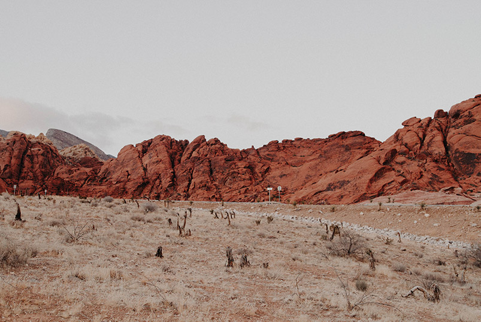

Le Désert
Un désert est une zone de terre stérile et très peu propice à la vie, où de très faibles précipitations se produisent à de rares occasions, et où par conséquent les conditions de vie sont hostiles pour les plantes ainsi que pour la vie des animaux. Les déserts font partie des environnements extrêmes. Le manque de végétation expose la surface non protégée au processus de dénudation. Les zones semi-arides et arides couvrent environ un tiers de la surface de la Terre. Cela inclut une grande partie des régions polaires où de faibles précipitations surviennent, souvent appelées des « déserts froids ». Les déserts de la planète peuvent être classés en fonction de la quantité de précipitations qu'ils reçoivent, des températures qui dominent tout au long de l'année, des causes de désertification ou de leur situation géographique.
Végétation
La densité de la végétation dépend de la quantité d’eau disponible, de la force du vent et de la nature du sol (salinité, reg, erg…) : seuls les milieux hyper-arides rocailleux sont totalement dépourvus de végétation (Atacama, Hoggar, reg du Tanezrouft…). Contrairement à une idée reçue, les végétaux poussent sur les dunes de sables : on trouve des buissons de créosote et de prosopis (Prosopis juliflora) dans les dunes de la Vallée de la Mort. Les plantes, les arbustes et les buissons se concentrent dans les lits des oueds et autour des points d’eau. Les adaptations de la flore désertique visent principalement à limiter la perte d’eau, mais également à obtenir autant d’eau que l’environnement puisse lui fournir.